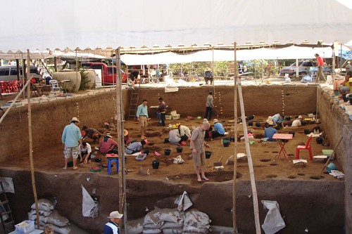
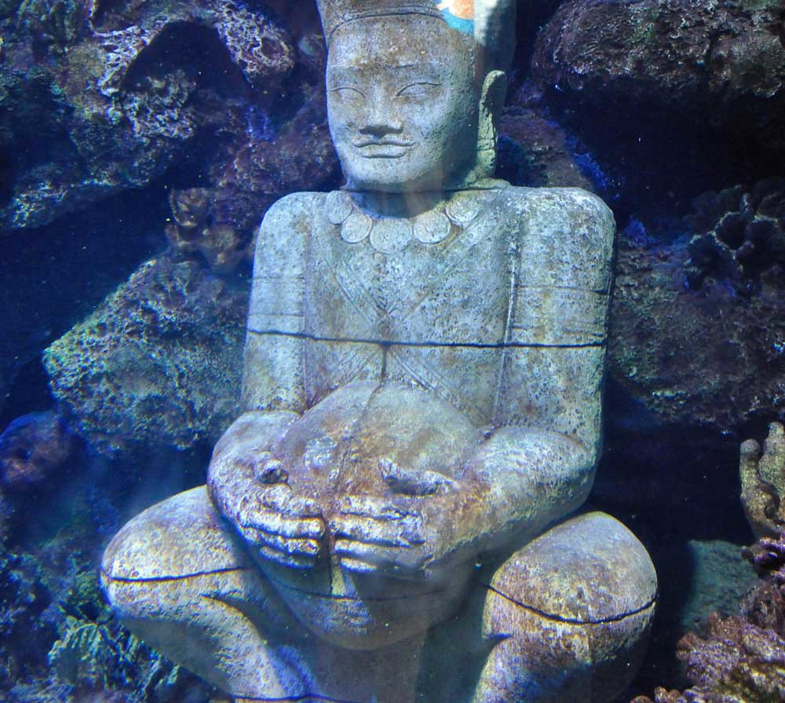

Specific archeology jobs
1.Field Archaeologist is someone who goes to the digsite and searches for artifacts and then they have to analyze and record their findings.

-"View of the archeological dig site" by 10b travelling / Carsten ten Brink is licensed under CC BY-NC-ND 2.0
2.Museum Conservators take care of the artifacts in museums and most of the artifacts or objects in a museum is found by archeologists or some other job like archeologists.
"Istanbul Archeology Museum" by Curious Expeditions is licensed under CC BY-NC-SA 2.0
3.Underwater Archaeologists go diving or searching in the ocean and bodies of water to find artifacts from ships and other places.

"Underwater Artifact" by kestrana is licensed under CC BY-NC 2.0
There are different types of jobs in archeology that serve different purposes and are all equally amazing and are all equally important in archeology and history. Also there are other jobs connected to archeology or are similar to archeology for example paleontology which is the study of plants and fossils where you do the same thing and because of archeology and paleontology we have artifacts and fossils in museums which are neat to learn about.